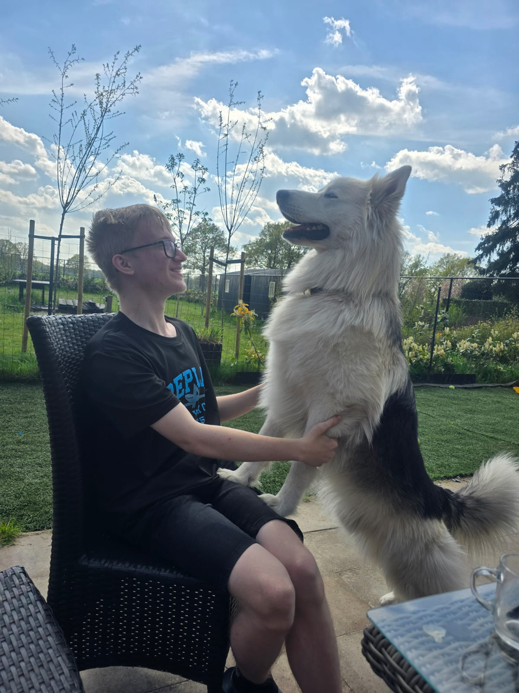
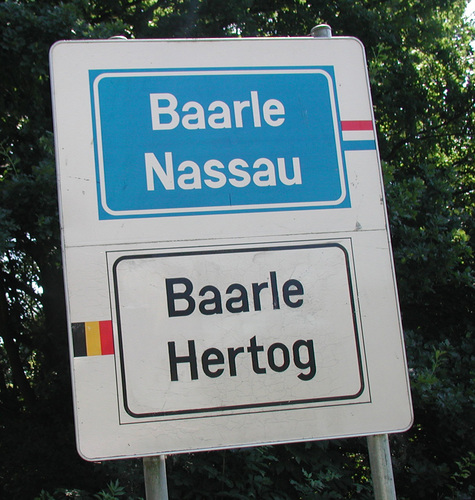

Welkom op deze pagina! Op deze site kan je gegevens vinden over mij en de school waar ik op zit.
Je kan kijken naar wat ik geleerd heb op school in het 1ste leerjaar en je kan informatie over mij vinden.
Je kan kijken naar wat ik geleerd heb op school in het 1ste leerjaar en je kan informatie over mij vinden.
In leerjaar 1 leer je basic HTML, CSS, PHP, JavaScript, C# en SQL. Je leert eigenlijk gewoon de meest basic dingen van de opleiding. Je leert ook samenwerken, communiceren en professioneel werken. Ik heb ook gehoord van andere studenten dat je microbit heb geleerd, maar dat heb ik niet gehad want ik zat niet in blok A.
We hebben de volgende vakken gehad:
Dit kent iedereen wel, lezen, luisteren, spreken, spelling en nog meer dingen.
Rekenen bij ons is best moeilijk, en zeker als je moeite hebt, maar voor mij is het te makkelijk.
Dit kent iedereen ook, ongeveer dezelfde dingen bij Nederlands maar dan in het Engels.
Bij praktijk leren we met andere samenwerken en communiceren, en hoe je het beste projecten kan maken.
Bij website development leren we hoe de programmeer talen werken, zoals HTML, CSS, JavaScript, PHP en SQL.
Bij native leren we hoe we met C# moeten omgaan, en dat is een programmeertaal die vaak voor games wordt gebruikt
Bij dit vak krijgen we tips hoe je het beste kan werken en communiceren in de werk omgeving.
Codelab is een inhaaluur voor als je huiswerk hebt en je hoeft er alleen naar toe als je mentor dat zegt.
Bij dit vak heb je dan een gesprek met je mentor en dan vertel je over je school en thuissituatie. Als je geen gesprek hebt hoef je niet te komen.
Hier wordt vaak besproken hoe het gaat met de klas, over stage. ect.
Het schooljaar is verdeeld in 2 blokken van 16 weken. Voor de hele opleiding heb je 8 blokken, blok A tot H. In blok D ga je stage lopen, en je krijgt ook keuzedelen dat je bijvoorbeeld games kan leren bouwen.
Je hebt ook de mogelijkheid om de opleiding te versnellen door middel als je de opdrachten snel af hebt. En dan ben je 1 jaar eerder klaar met school.
Mijn naam is Daan Fokkema en ik ben een student aan Curio Breda. Ik ben 18 jaar oud en ik zit in het 2de leerjaar van de opleiding Software Developer.
In mijn vrije tijd hou ik van gamen, programmeren, luisteren naar muziek, zingen, met dieren omgaan en koken/bakken.
Ik ben geboren in 2007, ik woon in Rijen met mijn moeder en mijn 2 katten. Elk weekend ben ik in Ulicoten bij mijn tante en elke vrijdag ga ik naar het koor.
Ik vind gamen leuk, en ik speel vooral spelletjes op de telefoon, zoals Piano Tiles 2, Roblox en Minecraft. In het kopje Media kan je mijn YouTube kanalen vinden.
Ik programmeer graag in verschillende programmeertalen, zoals C#, PHP en HTML. Ik vind het leuk om nieuwe dingen te leren en mijn vaardigheden te verbeteren. In Roblox ben ik ook bezig met mijn game te maken.
Ik luister graag naar muziek en zing vaak. Mijn favoriete muziekgenres zijn pop en jazz. Mijn favoriete artiesten zijn Amy Winehouse, Lady Gaga, Adele, Mariah Carey en Celine Dion.

Ik hou van dieren, vooral van honden en katten. Ik heb zelf 2 katten en mijn tante heeft 2 honden en 2 katten.
Ik vind het leuk om te koken en te bakken. Ik ben het beste in het bakken, vooral koekjes voor het koor.
Ik ben momenteel een student aan Curio Breda, waar ik de opleiding Software Developer volg. Ik zit in het tweede leerjaar en leer veel over programmeren en softwareontwikkeling.
Ik vind het een leuke opleiding want ik heb altijd iets gehad met computers, telefoons en consoles. Ik vind het leuk om te leren hoe software werkt en hoe ik zelf programma's en games kan maken.
Ik woon zelf in Rijen, ook half in Ulicoten. Elke vrijdag ga ik vanuit Breda met de bus naar Baarle-Nassau, en dan ga ik met de fiets naar Ulicoten sinds dat de bussen zijn veranderd.
Elke 2 weken heb ik op de dinsdag zangles in Rijen en elke vrijdag koor in Ulicoten. Ik heb helaas ook een chronische ziekte dus ik moet regelmatig naar het ziekenhuis in Tilburg.
Dus als je me wil vinden, ik ben regelmatig in Breda, Rijen, Baarle-Nassau, Ulicoten en Tilburg.
Ik heb een paar YouTube kanalen waar ik video's op plaats, zoals Piano Tiles 2 gameplay en Roblox gameplay. Hier zijn de links naar mijn kanalen:
Ik denk aan een getal tussen 1 en 1000. Kun jij het raden?
Aantal pogingen: 0